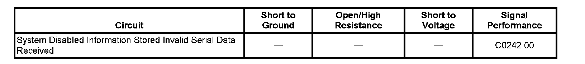

C0242
DTC C0242
DTC Descriptor
DTC C0242 00
Electronic control module (ECM) Indicated TCS Malfunction
Diagnostic Fault Information
Perform the Diagnostic System Check - Vehicle prior to using this diagnostic procedure. Initial Inspection and Diagnostic Overview

Circuit/System Description
The electronic brake control module (EBCM) and the electronic control module (ECM) simultaneously control the traction control. The EBCM sends a serial data message to the ECM requested torque reduction. When certain ECM DTCs are set, the ECM will not be able to perform the torque reduction for traction control. A serial data message is sent to the EBCM indicating that traction control is not allowed.
Conditions for Running the DTC
The ignition switch is in the ON position.
Conditions for Setting the DTC
The ECM diagnoses a condition preventing the engine control portion of the traction control function and sends a serial data message to the EBCM indicating that torque reduction is not allowed. The ECM will typically set a DTC and the EBCM will set this DTC.
Action Taken When the DTC Sets
One or more of the following actions may occur:
^ The EBCM disables the traction control system (TCS)/vehicle stability enhancement system (VSES) for the duration of the ignition cycle.
^ The Traction Control and Active Handling indicator turns ON.
^ The ABS/TCS indicators turn ON.
^ The ABS remains functional.
Conditions for Clearing the MIL/DTC
^ The condition for the DTC is no longer present.
^ The EBCM automatically clears the history DTC when a current DTC is not detected in 100 consecutive drive cycles.
Reference Information
Schematic Reference
Antilock Brake System Schematics
Engine Controls Schematics
Connector End View Reference
Antilock Brake System Connector End Views
Engine Control Module Connector End Views
Description and Operation
ABS Description and Operation (Under 8600 GVW ) ABS Description and Operation (Equal to or Over 8600 GVW)
Engine Control Module Description
Electrical Information Reference
^ Circuit Testing
^ Connector Repairs
^ Testing for Intermittent Conditions and Poor Connections
^ Wiring Repairs
Scan Tool Reference
Scan Tool Data List for ECM
Circuit/System Verification
DTC C0242 will set as result of the ECM detects a malfunction and then causes traction control (TCS) shut down, until the malfunction has been corrected.
Review Powertrain Symptoms list.
1. Perform Diagnostic System Check-Vehicle. Initial Inspection and Diagnostic Overview
^ Diagnose any other Vehicle DTCs before attempting diagnosis of C0242.
2. With Tech 2, view "Signals" Data Display list under EBCM.
3. Refer to appropriate module for diagnosing any "invalid" signals.
4. If no invalid signals are present, view "Signal Fault" data in "Enhanced DTC Data"
5. Refer to appropriate module for diagnosing that invalid message data.
6. Do not replace the EBCM due to this DTC fault.
Repair Instructions
Perform the Diagnostic Repair Verification after completing the diagnostic procedure. Verification Tests
Symptoms - Engine Controls